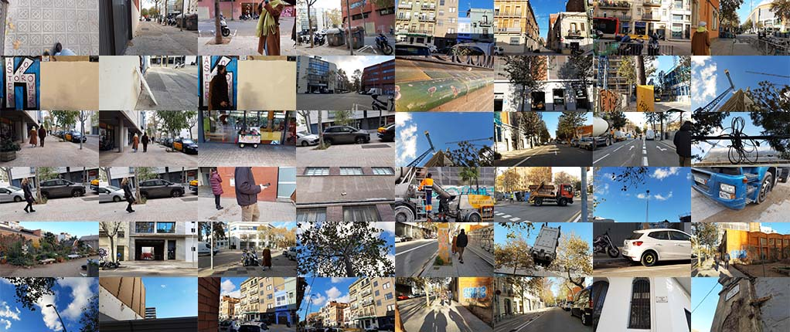
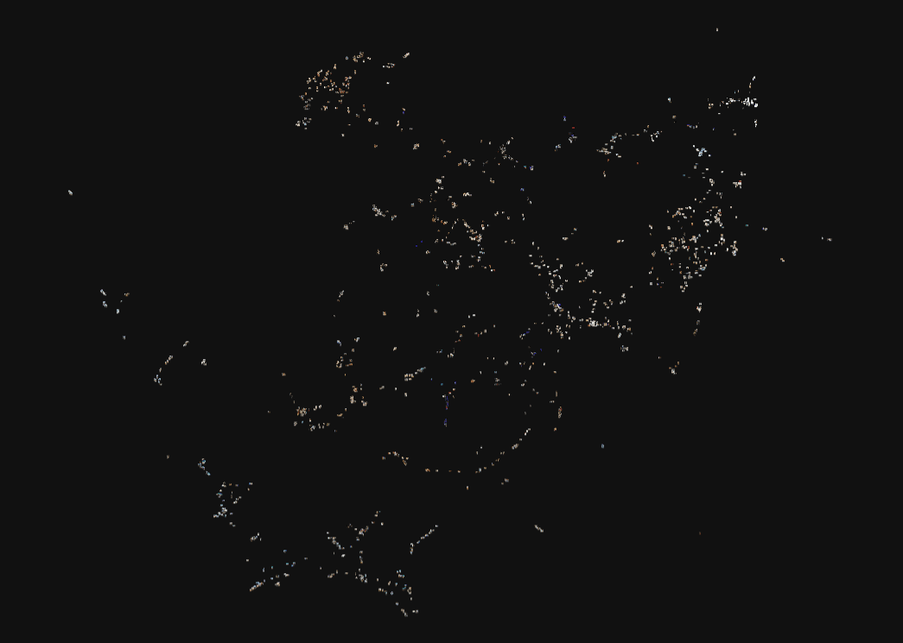
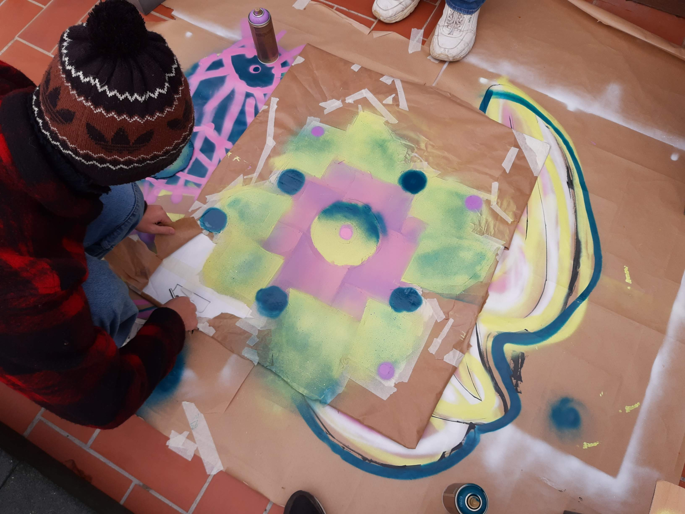

Assignment: Data gathering
Goals
- Exploring Poblenou's historical/contemporary contrasts
- Applying AI in design research
- Interpret patterns in large data
Process
Gathering 200 pictures. 100 of which are the most recent smartphone gallery's pictures plus another 100 shot within the Poblenou area that somehow relate to it's historical and present state. 
Being able to store big data offers a lot of opportunities. Looking at the folder-structure of my pc I start to realise that this might as well be the layout of my brain - or - even an extension it. These folders likely store more or different information than I remember. Collectively our class gathered 200 pictures each and centralized those by a pre-trained classificating Neural Network (PixPlot). The ±2200 images for the 100 gallery pictures each were classified as displayed below.

Results
What stood out in the categorized images were the ones with bright colours, unified compositions and clear textures. For example one of ten clusters almost solely consists of images of an art-installation with blue lights. Others were related because of clear patterns, plants, faces or buildings. Maybe not all relations within clusters were clear in terms of topics, the images - in general - would still resonate in their perspective, lay-out or colouring. Manually this could hardly have been achieved.Fractals
As a side-path experiment related to extended intelligences we explored the working of fractal design as a tool of layerizing shapes.

Drone
Recently I came across the CircuitMess Wheelson on the Arduino website and got the idea to initiate a setup for a Arduino drone. Since there is plenty of information on the topic on numerous blogs, online communities and webshops creating a concept for the hardware was easy to create. I ordered the first quarter of the EMC/rotor/motor assembly and tested it.